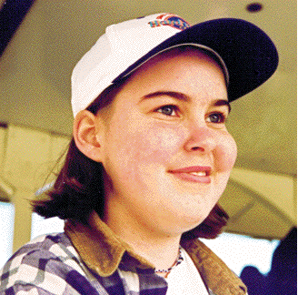
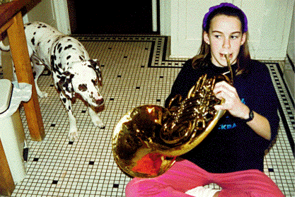

Emma lost her battle with her brain tumor on August 16, 1995, and a memorial service was held for her on August 27, 1995. As she was fighting, she and her sister Hannah constructed this home page. We intend to maintain this page as a memorial to Emma and we invite readers to send us their memories of her. Some memories are collected in the following page.
Here is a picture of me last March, when I still had some hair.
People say among the most beautiful things about me are my eyes.
People also admire my sister's photography.
This is a combination of both because each one brings out the other so well.
If you think that I look a little more like a chipmunk than the last time
you saw me, you can click
here
for a dumb explanation written by my Dad.

This is also a good place for finding information on brain tumors and children's hospitals because I myself have a malignant brain tumor, so info on that kind of stuff can be found around here. Yes, I will be dying, and soon. Please direct any questions to me (Emma),
my Dad, my Mom, or my sister Hannah.
Click here
for an essay on October 4th last year that I wrote for school about my tumor.
Click here
for medical links.
Click here
for an update on my medical condition.

Dog-related Web Sites
Dalmation Homepage.
There are some other pictures here.
I found these pages using the
Ultimate TV List.
I like music too. I just got a whole bunch of CD's. There's this place that has a list of homepages for almost every band.